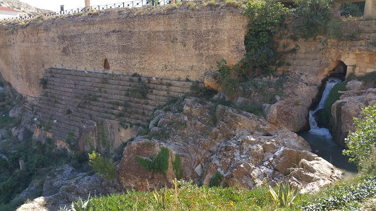

|
Presa
romana de Almonacid de la Cuba
Unas de las obras hidráulicas más importantes y mejor
conservadas de la Hispania romana.
La presa de Almonacid de la Cuba se
encuentra en el curso medio del río Aguasvivas. Es una de las tres
presas que regulaba el cauce del río Aguasvivas en época romana, junto a
las de Blesa y Muniesa.
Destaca por su buen estado de conservación. Data del siglo I y estuvo en
funcionamiento hasta el siglo III, cuando cayó en deshuso. El en siglo
VIII se utilizó como azud árabe y posteriormente en la época medieval.
Con un muro de más de 100 metros de longitud, se asienta directamente
sobre la roca; está realizada con hormigón romano, y revestida con
sillares de piedra. Una de las presas romanas más altas del mundo con
casi 34 metros de altura máxima.
El acueducto que sale de la presa discurre hasta el Pueyo de Belchite
donde existe un poblado, todavía sin excavar en su totalidad, de época
romana.

|